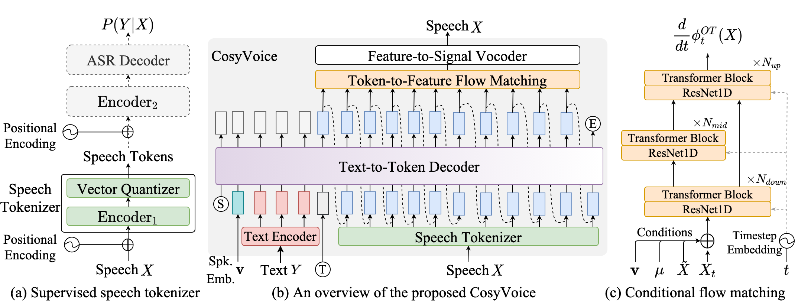

CosyVoice: A Scalable Multilingual Text-to-speech Synthesizer based on the Progressive Multi-level Semantic Decoding
Abstract: Recently, language model (LM) based text-to-speech (TTS) emerges into the mainstream due to their high naturalness and zero-shot capacity. In this paradigm, speech signals are discretized into token sequences, which are modeled by an LM with textual inputs and reconstructed by a token-based vocoder to waveforms. Current speech tokens are learned in an unsupervised manner and lacks explicit semantic alignment to the text. This places more demand on the LM due to the semantic gap between text and tokens. In this paper, we treat the TTS task as a multi-level semantic decoding problem and propose the CosyVoice. Specifically, an LM is used to decode the high-level text into the supervised semantic tokens, which are derived from a multilingual speech recognition model with strong semantic alignment to text. Then, a flow matching model is employed to decode middle-level semantic tokens into the low-level acoustic features, which are finally decoded into speech waveforms by a feature-based vocoder. Thanks to the design, CosyVoice becomes a versatile model, which can perform emotional synthesis, speaker identity controlling and voice conversion. Experimental results show that CosyVoice outperforms existing TTS systems in terms of content consistency and speaker similarity for zero-shot voice cloning. A modular analysis revolves the importance of our supervised semantic tokens. Moreover, we find that utilizing large-scale data further improves the synthesis performance, indicating the scalability of CosyVoice. To the best of our knowledge, this is the first attempt to involve supervised speech tokens into TTS.
Contents
Overview of CosyVoice

Figure 1. An overview of the CosyVoice Models at the inference stage. In summary, CosyVoice consists of an autoregressive transformer to generate corresponding speech tokens for input text, an ODE-based diffusion model, flow matching, to reconstruct Mel spectrum from the generated speech tokens, and a HiFTGAN based vocoder to synthesize waveforms. Dashed modules are optional in specific model usages, such as cross-lingual, SFT inference and so on.
Zero-shot In-context Generation
| Language | Prompt | Generated 1 | Generated 2 |
|---|---|---|---|
| ZH | 随着大军缓缓前进，他忍不住琢磨起了回京之后会被派到什么艰苦的地方。顶缸。要知道皇帝一向就是这么干的，几乎没让他过过什么安生日子。 |
想着即将到来的未知与挑战，他的心中不禁泛起一丝苦涩，但也很快被坚毅取代。这次，无论是荒凉的边陲小镇，还是险象环生的前线阵地，他都已做好准备，迎接新的使命。 |
大军的步伐愈发坚定，每一步都踏出了他们对未来的期许与决心。而他，作为这铁血军团的一员，更是心怀壮志，期待着用自己的双手，再次书写一段传奇，证明给所有人看。 |
希望你以后能够做的比我还好呦。 |
收到好友从远方寄来的生日礼物，那份意外的惊喜与深深的祝福让我心中充满了甜蜜的快乐，笑容如花儿般绽放。 |
漫步在金秋的枫林中，阳光透过斑斓的叶片洒在身上，清风拂面，我陶醉在这宁静而美好的时光里，快乐得几乎要翩翩起舞。 |
|
我的故事，过程很美，而结局却满是悲伤。 |
望着空荡荡的房间，昔日共度的美好时光历历在目，如今却物是人非，泪水止不住地滑落，心如刀割。 |
得知挚爱的宠物因病离世，我沉浸在无尽的哀伤中，那熟悉的身影、温顺的眼神仿佛还在眼前，令人心碎不已。 |
|
多少年了，还没有人敢这样对我拍桌子瞪眼睛。 |
目睹不法分子公然破坏公共设施，无视社会规则，我怒不可遏，心中充满了对这种恶劣行径的强烈谴责与愤慨。 |
得知商家以次充好，欺诈消费者，我怒火中烧，对于这种丧失诚信、侵害消费者权益的行为感到极度愤恨，誓要讨回公道。 |
|
| EN | I think people online have actually assembled videos showing every launch and it just gets like crazy fast as you get to twenty twenty three. So yeah, so we've done a nineteen three flight. We're now qualifying Falcon nine to be able to do forty flights. |
In the quest for sustainable energy, Tesla leads the charge; every electric vehicle on the road is an emissary saluting clearer skies, collectively weaving the tapestry of our planet's verdant future. |
From space exploration to subterranean tunnels, from AI to the neurotechnology revolution, my pursuit transcends mere technological frontiers; it's about carving out unprecedented realms of existence and progress for mankind. |
I'm so happy I got to do this. I really wanted to work with Tom Hooper. I know that he records live and he films and records your vocals live. It's such an interesting thing to me and I wanted to see him work. I had actually done screen tests for Les Mis. |
Every stage is a fresh adventure, and as the lights ignite, it's an unspoken pact between me and the audience, weaving unforgettable nights where dreams meet reality. |
Creating is my way of extracting magic from life's moments. Whether it's joy or tears, I embrace it all, transmuting those feelings into notes, with the hope of touching the depths of every soul. |
|
| JP | の匂いを嗅ぎつけて現場に赴き、モテる感覚の全てを使って犯人を割り出し、食らいついたら相手が観念するまで証拠という鋭い歯を食い込ませるそれが探偵さん。 |
投資で安定収入を得たい人達で情報交換をしませんか？ |
自分でもユナに提案してからやっぱり暑すぎるか。 |
どうして、どうしてお姉ちゃんを助けてくれなかったの？ |
クレジットカード現金化の店舗のスタッフブログです。 |
某ハンドメイドブログの別館ともなっております。 |
|
| Yue | 结果学校苦心安排佢哋自行排成三队，走到行列最前端。 |
不可能吧我挂住你啦点算啊，你又唔接我电话。 |
老公，今晚石河子好似有六级地震。 |
你系男嘅定系女嘅，你叫咩名，边度嚟噶？ |
衞生署提醒市民，近期流感病例增加，建議出門佩戴口罩，留意個人衛生。 |
呢度嘅风景真係靓到爆，连带咁多年嚟我见过嘅都比唔上。 |
|
| KO | 물고기들은 빗물이 물 위로 떨어지는 소리에 놀라 달아나 버리지. 그래서 비가 그친 후엔 낚시하기 딱 좋아. |
여기에 가만히 서 있는다고 상대가 찾아오진 않아. |
기억해둬, 친구, 난 언젠가 이 세상을 정복할 사람이야! |
고작 빗방울로 호들갑은, 아직 번개도 치지 않았는데. |
하늘이 맑다고 번개는 숨길 수 없고, 비가 내리지 않아도 신의 번개를 내릴 수 있다. |
비록 몸과 꿈은 사라졌어도, 그녀는 결국 신성한 벚나무가 되었다. |
Cross-lingual Cloning
| ZH | EN | JP | Yue | KO |
|---|---|---|---|---|
对，所以说你现在的话，这个账单的话，你既然说能处理，那你就想办法处理掉。 |
Yes, that's why I'm saying, regarding the bill you're currently discussing, if you say you can handle it, then find a way to take care of it. |
そう、だから今あなたが言っていること、この請求書について、あなたが処理できると言ったのなら、何とかして処理してください。 |
对，所以话你而家讲嘅，呢张账单嘅话，你既然话得掂，噉你就要想办法搞掂佢。 |
맞아, 그래서 네가 지금 말하는 것, 이 계산서에 대해서, 네가 처리할 수 있다고 했다면, 그렇다면 방법을 찾아서 처리해야 해. |
在那之后，完全收购那家公司。因此，保持管理层的一致性，利益与即将加入家族的资产保持一致，这就是我们有时不买下全部的原因。 |
And then later on, fully acquiring that company. So keeping management in line, interest in line with the asset that's coming into the family is a reason why sometimes we don't buy the whole thing. |
その後、その会社を完全に買収する。だから、経営陣を一列に並べ、家族に入る資産との利益を一致させることが、私たちが全てを買わない理由の一つです。 |
之后，就完全收购咗嗰间公司。所以，保持管理层同兴趣与即将加入家族嘅资产保持一致，系我们有时唔买晒全部嘅原因。 |
그리고 나중에, 그 회사를 완전히 인수하게 됩니다. 그래서 경영진을 일치시키고, 가족에 들어오는 자산과의 이익을 일치시키는 것이 우리가 가끔 전부를 사지 않는 이유입니다. |
只是雨滴有什么麻烦的？这还没有打雷呢！ |
Rainfall alone does not constitute a storm. Thunder is required. |
雨なんて大したことありません。まだ雷も鳴っていないのですから。 |
只系雨滴有咩麻烦嘅？连打雷都未有呢！ |
고작 빗방울로 호들갑은, 아직 번개도 치지 않았는데. |
早点回家吧，到家了如果可以的话给我回个信息。 |
Come home early, and if possible, let me know when you're back. |
早く家に帰って、家に着いたら可能なら私にメッセージを返してください。 |
早啲翻屋企吧，到屋企可以嘅话俾我回个信息。 |
일찍 집에 돌아오세요. 집에 도착하면 가능하다면 저에게 연락해 주세요. |
虽然这种时候已经错过了云先生的戏，但夜晚的璃月仍有许多好去处。 |
By this time of night, we will have already missed Yun's play. But LeeYew is full of interesting places to explore, even at night. |
もう雲殿の芝居に間に合わないが、夜の璃月はまだまだいいところがたくさんあるぞ。 |
虽然呢个时候已经错过咗云先生嘅戏，但夜晚嘅璃月仲有好多好去处。 |
어디가서 눈을 피하지. 난 괜찮은데, 넌 감기 걸릴지도 모르니. |
Instructed Voice Generation
Speaker Identity Control
| Instruction | Generated |
|---|---|
| Theo 'Crimson', is a fiery, passionate rebel leader. Fights with fervor for justice, but struggles with impulsiveness. (翻译：西奥（Theo）‘绯红’，是一位火热、充满激情的反叛领袖。他为正义而战，斗志高昂，但容易冲动。) |
人总是要为自己所做的事情付出代价的，我不怕付出代价，只是不愿意让无辜的人来陪葬。 |
| Kai 'Torrent', is a cool-headed, tactical water mage who plans his moves carefully. A soothing presence with hidden depths. (翻译：凯（Kai）‘激流’，是一位冷静、讲究策略的水法师，仔细规划每一步行动。他是一个具有安抚作用的存在，内心深藏深度。) |
一个人最大的悲哀，不是牺牲，而是看着自己辛辛苦苦得来的一切，最后变成了别人的功劳。 |
| Zara 'Wildfire', is an impulsive, fearless firebrand who loves a challenge. Her bravery inspires others, though she often acts recklessly. (翻译：扎拉（Wildfire）‘狂野之火’，是一个冲动而无畏的煽动者，她热爱挑战。她的勇敢鼓舞了他人，尽管她的行为常常是鲁莽的。) |
真正的速度你是看不见的，就像风起云涌、日落月升，就像你不知道树叶什么时候变黄，不知道你的孩子什么时候长出第一颗牙来。 |
| Selene 'Moonshade', is a mysterious, elegant dancer with a connection to the night. Her movements are both mesmerizing and deadly. (翻译：赛琳娜（Selene）‘月影’，是一位神秘、优雅的舞者，与夜晚有着特殊的联系。她的舞姿既令人着迷又致命。) |
我们走的每一步，都是我们策略的一部分；你看到的所有一切，包括我此刻与你交谈，所做的一切，所说的每一句话，都有深远的含义。 |
| Priya, the humanitarian doctor, heals wounds of the world with her boundless empathy and skill. (翻译：普莉娅（Priya），这位人道主义医生，用她无尽的同情心和高超的医术治愈着世界的创伤。) |
You don't know about real loss, because it only occurs when you've loved something more than you love yourself. |
| Ivan, the old sea captain, navigates life's storms with timeless wisdom and a heart of gold. (翻译：伊凡（Ivan），这位老船长，用永恒的智慧和一颗善良的心驾驭人生的风暴。) |
Hope is a good thing, maybe the best of things, and no good thing ever dies. |
Fine-grained Control
| Text | Generated |
|---|---|
| [laughter]有时候，最简单的事情[laughter]能让我们笑得最开心，就像是无意中听到的一个傻笑话[laughter]。 | |
| 他搞的一个恶作剧，让大家<laughter>忍俊不禁</laughter>。 | |
| 成功并不是预先设定的终点，它需要你一步一步地<strong>努力</strong>，持续地<strong>努力</strong>，最终将梦想变成现实。 | |
| 当你深入了解一个文化[breath]，你会开始欣赏那些最初看似平凡无奇的细节[breath]，并且通过这些细节，逐渐理解这个文化的精神。 | |
| Well that's kind of scary [laughter] I'm not near that age [laughter] I'm way over it but I do have children to think about you know. | |
| Well that pretty much covers <laughter>the subject</laughter> well thanks for calling me. | |
| The team's <strong>unity</strong> and <strong>resilience</strong> helped them win the championship. | |
| I don't think I over eat yeah [breath] and um I do exercise regularly. |
Style Control
| Instruction | Generated |
|---|---|
| A female speaker with normal pitch and normal speaking rate. | 他讲的冷笑话虽然老套，但仍然让大家笑个不停。 |
| A female speaker with high pitch, normal speaking rate, and happy emotion. | 他讲的冷笑话虽然老套，但仍然让大家笑个不停。 |
| A male speaker with low pitch, fast speaking rate, and angry emotion. | 生活的美不在于宏大的时刻，而在于那些我们经常忽视的简单而日常的奇迹。 |
| A female speaker with normal pitch, slow speaking rate, and sad emotion. | 当我们离开这个世界时，人们记住的不是我们积累的财物，而是我们对他们生活的影响和我们共享的爱。 |
| A male speaker with low pitch, slow speaking rate, and fearful emotion. | 深夜独行于荒芜的小巷，忽闻身后传来诡异的脚步声，我寒毛直竖，心跳如雷，无法抑制对未知危险的深深恐惧。 |
| A male speaker with low pitch, slow speaking rate, and sad emotion. | Every choice we make, every path we take, molds our identity. We are the sum of our choices, and it's up to us to make them meaningful. |
| A female speaker with angry emotion. | I’m really struggling to stay calm right now because what you did was totally out of line! |
Emotionally Expressive Voice Generation
| Emotion | Generated 1 | Generated 2 |
|---|---|---|
| Sad | 等你熬过那些孤独无助的时刻，你才会发现，原来自己并没有想象中那么脆弱。原来一个人，也可以活成千军万马的模样。 |
我可以安慰很多人，但就是不能安慰自己那颗千疮百孔的心。总有一些人会慢慢淡出你的生活。你要学会接受，而不是怀念。有些事。不管我们如何努力，回不去就是回不去了。我们漫长的岁月中有太多的过客，有太多的无奈。 |
| Happy | 小丽抿着嘴，弓着腰，蹑手蹑脚地，一步一步慢慢地靠近它。靠近了，靠近了，又见她悄悄地将右手伸向蝴蝶，张开的两个手指一合，夹住了粉蝶的翅膀。小丽高兴得又蹦又跳。 |
除夕晚上，儿子孙子都来到她身边，她满脸皱纹都舒展开了，就像盛开的菊花瓣，每根皱纹里都洋溢着笑意。 |
| Angry | 突然有一个不认识的西班牙老粗，捶着台子站了起来，涨红着脸，激动的演说着，他说得口沫横飞，气得双眼要炸了似的弹出着，两手又挥又举，恨不能表达他的愤怒。 |
无可抑制的愤怒在他的血管中奔腾翻滚着，它一阵飓风般的疯狂奔跑，没有任何事情能挡它，它看见两个那种恶魔吸附在马上，还有两条狗。他是一个狂魔，也是一阵毁灭一切的龙卷风。 |
| Fearful | 在漆黑的夜晚，月光洒在寂静的街道上，一道身影颤抖着站在破旧的木门前。他的名字叫做李明，一个平凡的邮差，此刻却满眼恐惧地盯着那扇似乎隐藏着无尽黑暗的门。 |
他试图在心中寻找一丝勇气，回忆起过去的日子里，那些快乐而平凡的日子。他试图用这些回忆来驱散心中的恐惧。然而，那扇破旧的木门似乎在呼唤着他，吸引着他走向黑暗。李明的心跳如同在狂奔的野马，无法控制。 |
Speaker Interpolation
| Text | speaker A | 0.5 | speaker B |
|---|---|---|---|
| 晴空万里不如你心情愉悦，今天有什么开心的事吗？ | |||
| Text | speaker A | 0.5 | speaker B |
| 早上好啊，今天也是元气满满的一天呢，一起加油吧 | |||
| Text | speaker A | 0.5 | speaker C |
| 哎哟，为什么每次打游戏你都不认真的，我都快被怪物抓走了，你却在那里发呆，下一局你可要保护我啊 | |||
| Text | speaker A | 0.5 | speaker C |
| 哼，你明明答应我要一起去图书馆的，难道你忘记我们的约定了吗，真是的，下次你要记得守时哦 | |||
| Text | speaker B | 0.5 | speaker C |
| 有什么让你感到不开心的事情吗？哎呀，听到你这么说，我很难过。如果你愿意的话，可以跟我分享一下，或许我可以帮助你排解烦恼。 |
Disclaimer
The content provided above is for academic purposes only and is intended to demonstrate technical capabilities. Some examples are sourced from the internet. If any content infringes on your rights, please contact us to request its removal.